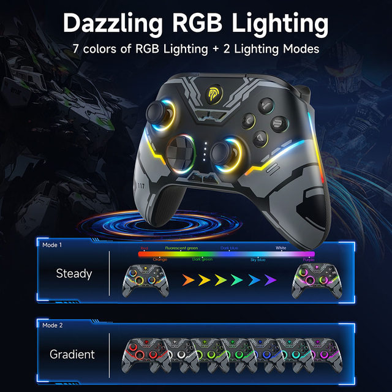
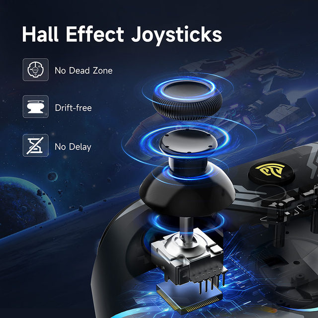
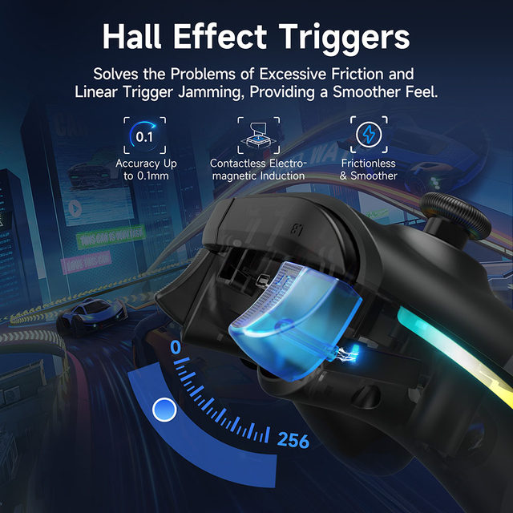
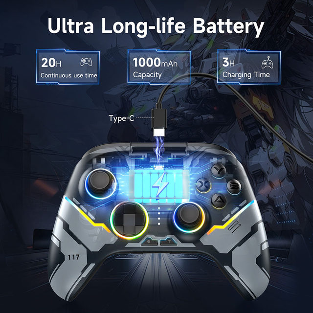
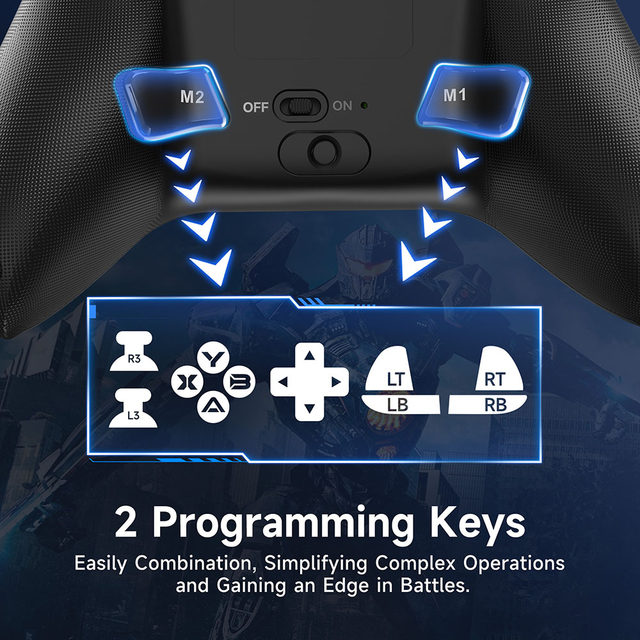
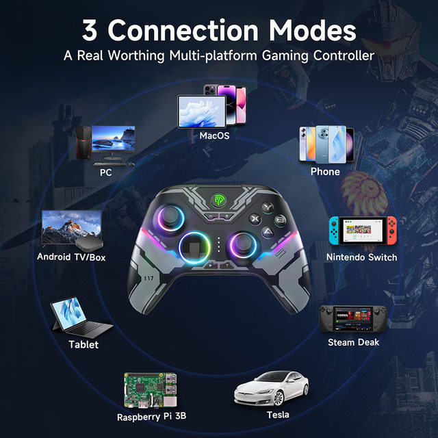
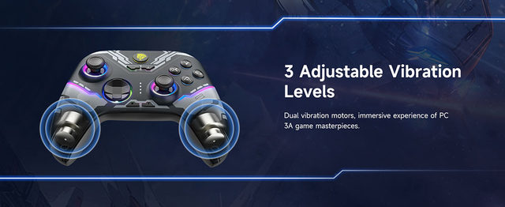
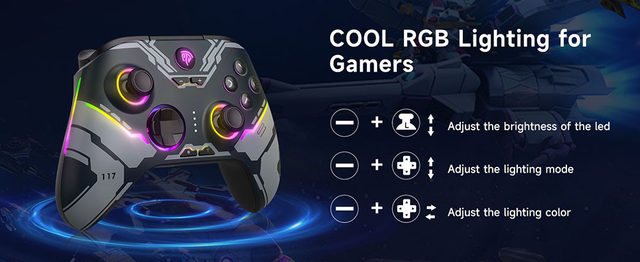
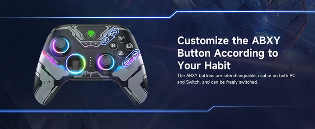
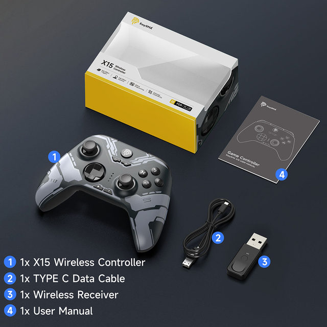

Connection How-to Video
Multi-Platform Compatibility: Compatible with PC Windows systems, Nintendo Switch, Android and iOS mobile phones, and Steam Deck.
Three-Mode Connection: Supports three connection methods: Bluetooth, wired, and 2.4G. Players can choose the connection method that suits them.
Dual Hall Configuration: Equipped with dual Hall configuration, including Hall trigger and Hall rocker. This configuration makes the control more precise and avoids the problem of cursor drift in the game.
Ultra-Long Standby: Built-in 1000mAh large-capacity battery, it only needs to be charged for 2 hours and can be used for up to 30 hours, giving you ultra-long standby time.
RGB Lighting Effect: Equipped with 7 different RGB lights, it supports two lighting modes: mixed color and single color. The light color is adjustable and the mode can be switched. There is a light switch button on the back of the handle, which can turn the light on/off freely.
ABXY Key Swap Function: Press "B" + "—" + "+" at the same time, and the ABXY key value can be switched between the PC key layout and the Switch key layout.
Vibration Adjustment Function: Supports three levels of adjustable vibration: "0%", "50%", and "100%". Players can freely adjust according to their own preferences.







Lighting Setting
RGB Light On/Off: Toggle the RGB Lights Switch to turn on/off the RGB lights.
Light Mode: Press "-"+"D pad UP"button to adjust lighting to "Colorful" mode Switching;Press "-"+"D pad Down" button to adjust lighting to "Steady" mode.
Color Adjustment: Press "-"+"D pad Left" to adjust lighting color in a Positive direction; Press "-"+"D pad Right" to adjust lighting color in a Negative direction
Brightness Adjustment: Press "-"+"left joystick UP" button to increase the brightness; Press "-"+"left joystick Down" button to reduce the brightness

APP Function
Download the "KeyLinker" app on your phone,Through this APP, you can change the ABXY layout of the controller, adjust the Lighting and vibration, set the turbo, macro definition, and other functions.
(Note: The settings made in the APP are also valid on other platform devices. If you want to restore the initial settings of the controller, you need to select "Restore Factory Settings" in the APP)

Packing List
1 x X15 Gaming Controller
1 x USB Receiver
1 x Type C Cable
1 x User Manual
